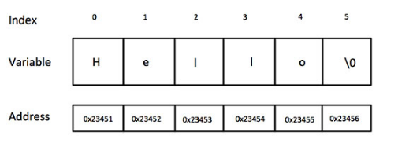

Structures & Unions In C
Arrays allow to define type of variables that can hold several data items of the same kind. Similarly, structure is another user-defined data type available in C that allows to combine data items of different kinds.
Structures are used to represent a record. Suppose you want to keep track of your books in a library. You might want to track the following attributes about each book:
•Title•Author
•Subject
•Book ID
Defining a Structure:
To define a structure, you must use the struct statement. The struct statement defines a new data type, with more than one member. The format of the struct statement is as follows:

The structure tag is optional and each member definition is a normal variable definition, such as int i; or float f; or any other valid variable definition. At the end of the structure's definition, before the final semicolon, you can specify one or more structure variables but it is optional. Here is the way you would declare the Book structure:

Accessing Structure Members:
To access any member of a structure, we use the member access operator (.). The member access operator is coded as a period between the structure variable name and the structure member that we wish to access. You would use the keyword struct to define variables of structure type. The following example shows how to use a structure in a program:#include<stdio.h> |
When the above code is compiled and executed, it produces the following result: Book 1 title : C Programming Book 1 author : Neha Book 1 subject : C Programming Tutorial Book 1 book_id : 6751442 Book 2 title : CPP Book 2 author : kabir Book 2 subject : CPP Tutorial |
Structures as Function Arguments:
You can pass a structure as a function argument in the same way as you pass any other variable or pointer.
example
Pointers to Structures:
You can define pointers to structures in the same way as you define pointer to any other variable:struct Books *struct_pointer; |
Now, you can store the address of a structure variable in the above-defined pointer variable. To find the address of a structure variable, place the ‘&’ operator before the structure's name as follows:
struct_pointer = &Book1; |
To access the members of a structure using a pointer to that structure, you must use the -> operator as follows:
struct_pointer->title; |
Let us rewrite the above example using structure pointer.
example
Bit Fields
Bit Fields allow the packing of data in a structure. This is especially useful when memory or data storage is at a premium. Typical examples include:
•Packing several objects into a machine word, e.g. 1 bit flags can be compacted.•Reading external file formats -- non-standard file formats could be read in, e.g., 9-bit integers.
C allows us to do this in a structure definition by putting :bit length after the variable. For example:
struct packed_struct { |
Here, the packed_struct contains 6 members: Four 1 bit flags f1..f3, a 4-bit type, and a 9-bit my_int. C automatically packs the above bit fields as compactly as possible, provided that the maximum length of the field is less than or equal to the integer word length of the computer. If this is not the case, then some compilers may allow memory overlap for the fields, while others would store the next field in the next word.
« Previous Next »